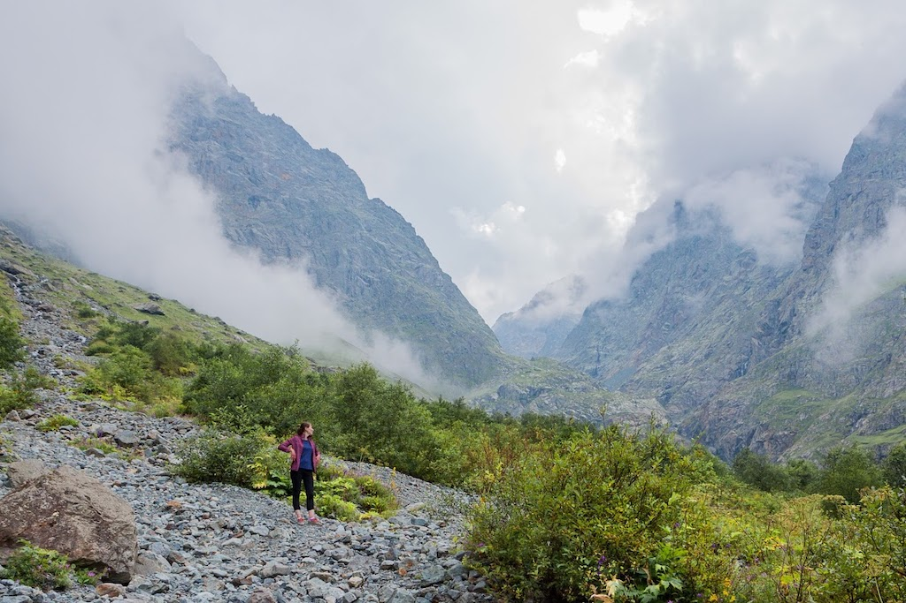

Bio
I was born in a country in Central Asia that was a part of the USSR and then lived in a few towns in Russia before moving to Australia. My birth town is literally in the middle of a desert. After moving to Russia I went to college and studied railway automation. I continued my education and graduated from a university as an engineer with major in IT in railway industry.
After graduation I worked in Support and QA roles for 3 years. The company I worked for specialized in automation of business processes and enterprise software. We were building task and inventory management system for field technicians. I was responsible for quality and releasing of location tracking component. Once upon a time, being a responsible QA engineer I walked several kilometers around the office to measure tracking accuracy.
After being a release engineer for nearly a year I joined a logistics company thinking about my future career. Then we moved to Australia. I completed a bunch of tech MOOCs and got into coding, so I joined Coder Academy to structure my knowledge, fill in the gaps and to fight the fear of looking stupid.
Hobbies
I like watching the TV and I'm proud of it! By TV I mean watching good shows and movies on Netflix or Stan. When I run out of good content I have to go outside. I grew up living by the mountains and I always like hiking.
